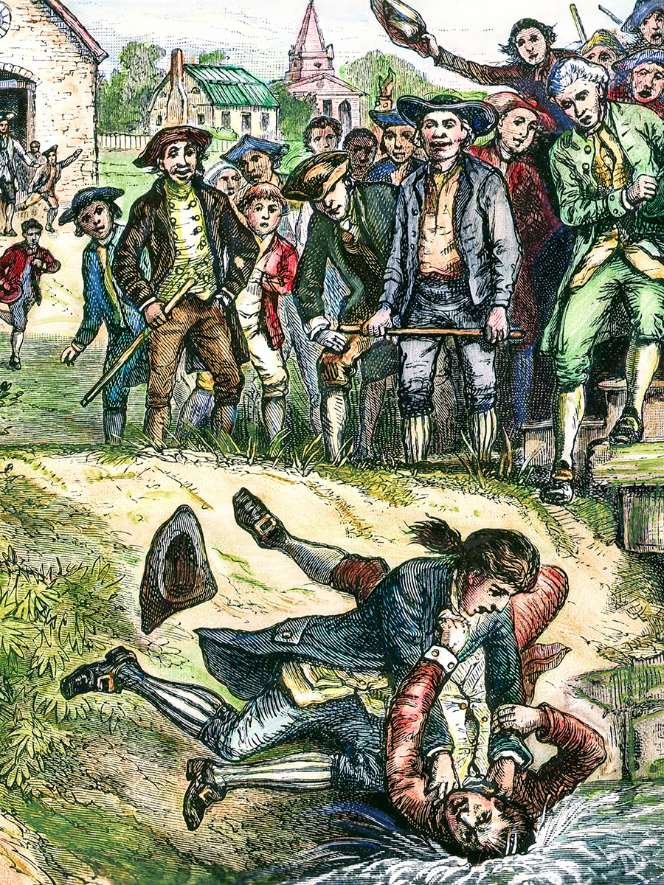

During the Revolutionary War, the states created the Articles of Confederation, but it was a very frail central government with little powers. The Articles of Confederation emphasized the sovereignty of each state. Each state retained all power not expressly delegated and granted by the confederation. Rather than creating a national government, each state agreed to operate with one another in a league of friendship. They pledged to defend each other against attacks from others, to allow freedom of movement from one state to another, and to extradite criminals as necessary. Each state was allocated two to seven members to the Congress of the Confederation based on population size. State legislatures appointed the Congressional members, and individuals could only serve three out of six years.
This group formed the national government. The federal government was limited in power to conduct foreign relations and to declare war, but it was not allowed to have a standing army. The national government also could set weights and measures, including coins, and serve as a final court for state disputes.
The Articles proved to be unworkable because the national government had no way to ensure compliance by the states with such measures as securing tax revenues. Each state was in charge of printing its own currency, causing problems in commerce. Imagine trying to do business and having to change currencies when selling or buying across state boundaries in the same country.

Shays’ Rebellion, a group of widespread organized protests led by Daniel Shays against the tax collection practices of state governments, emphasized the weakness of the national ability to maintain armed forces. In the rebellion, angry farmers shut down the court system as they could not raise the necessary funds to pay their debts. In many ways, the national government relied on the charity of the state governments. The state governments were often not in a sharing mood. They had a huge debt, and the national banking system was on the verge of collapse.
Moreover, even before the Constitutional Convention was called, several states sent delegations to Britain to rejoin the British Empire. Time was the enemy of the new nation, as delegates from South Carolina, New York, and New Hampshire were on the way to London to negotiate. The convention was initially held in secret. When word got out that the convention was happening, organizers announced only a simple revision of the Articles of Confederation. It wasn’t clear whether the majority of the state legislatures would support a stronger central government. History showed that there would be an entirely new system in place when all was said and done.